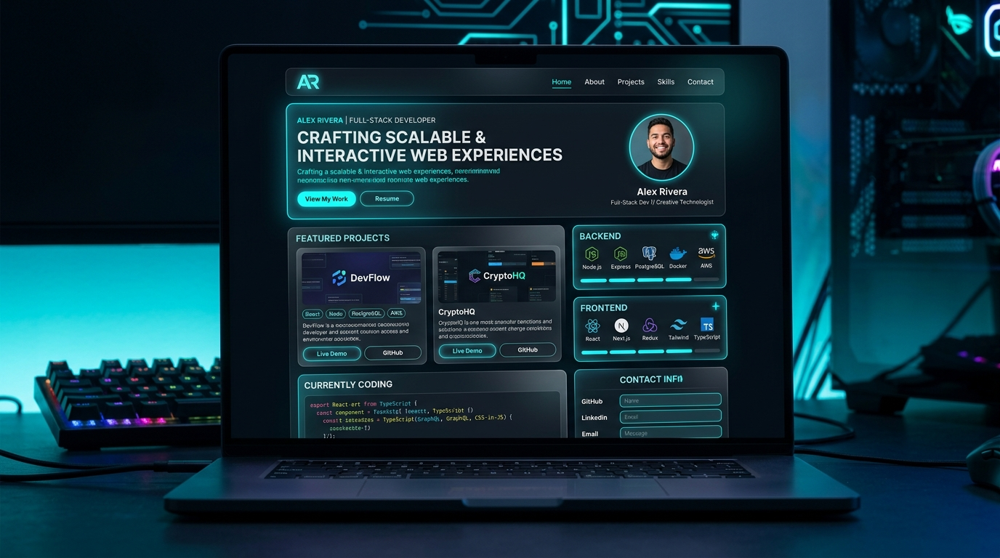
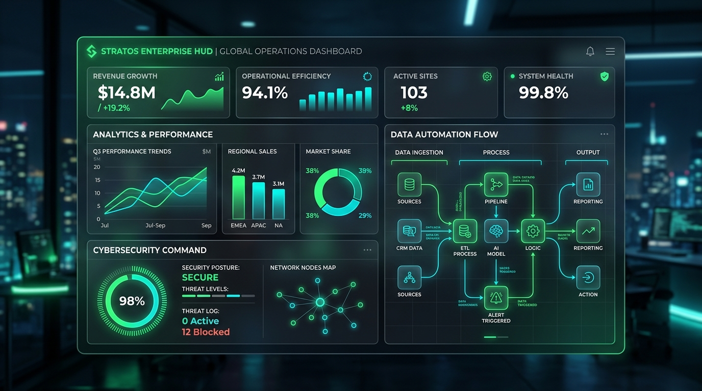
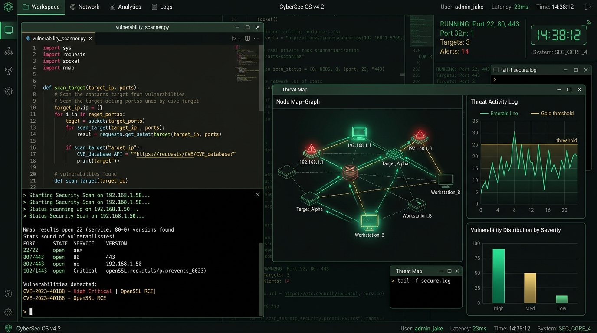

Hi, I'm Dominic Traves Apopo.
I Build Digital Solutions That Solve Real Problems.
I build modern, responsive and purposeful digital experiences that turn ideas into functional solutions. From websites and web applications to automation, networking and technology-driven business solutions, I enjoy solving real-world problems through technology.
Building today. Learning every day. Creating for tomorrow.
Turning Curiosity Into Technology
Short Introduction
I'm Dominic, a Kenyan technology enthusiast and aspiring cybersecurity and data professional with a strong passion for building things with technology.
My journey started with computer packages and gradually grew into web development, programming, networking, cybersecurity and data.
I enjoy taking an idea, understanding the problem behind it, and turning it into something practical, useful and visually compelling. I am continuously learning, building projects and challenging myself to become better at what I do.
My Mindset & Focus
I believe technology is most powerful when it solves a real problem. My journey into technology has been driven by curiosity, self-learning and a desire to create opportunities through practical skills.
I enjoy both the creative and technical sides of development — designing interfaces, writing code, understanding systems, troubleshooting problems and finding better ways to accomplish things.
I'm not just interested in learning technology. I want to build with it.
What I Do
Combining creativity, technical rigor, and problem-solving to engineer modern digital solutions across multiple domains.
Web Development
I create responsive and modern websites designed to look great, perform well and provide a smooth user experience.
UI & Digital Design
I combine design and technology to create digital experiences that are clean, professional and easy to use.
Technology & IT Solutions
I enjoy working with technology beyond the browser to design, troubleshoot, and optimize computing systems.
Cybersecurity
Actively building knowledge to identify vulnerabilities and assist organizations in building resilient, secure systems.
Data & Python
Developing capabilities in Python scripting, automation pipelines, data visualization, and analytical problem-solving.
My Skills & Technologies
A comprehensive breakdown of tools, programming languages, and domains I use to turn concepts into reality.
HTML5
DevelopmentCSS3 & Styling
DevelopmentJavaScript
DevelopmentPython
Development & DataResponsive Web Design
DevelopmentGit & GitHub
DevelopmentAPIs & Web Services
DevelopmentDatabase Fundamentals
DevelopmentFull-Stack Concepts
DevelopmentAdobe Photoshop
DesignAdobe Illustrator
DesignCanva & Digital Graphics
DesignUI Design
DesignComputer Networking
IT & InfrastructureSystem Troubleshooting
IT & SupportHardware & Software Config
IT & SupportCybersecurity Fundamentals
SecurityEthical Hacking Intro
SecurityNetwork Security
SecurityProblem Solving
ProfessionalCommunication
ProfessionalResearch & Analytics
ProfessionalCore Technology Breakdown
Languages
HTML • CSS • JavaScript • Python
Tools & Platforms
Git • GitHub • VS Code • Adobe CC • Canva
Specializations
Web Dev • Cybersecurity • Networking • Data
Featured Projects
Selected works demonstrating application development, user experience design, business solutions, and Python programming.

Personal Developer Portfolio
A modern portfolio website designed to showcase my skills, projects, experience and journey in technology.

DOTA Group Limited Corporate Website
A modern corporate website designed and developed for DOTA Group Limited to establish its digital presence, communicate its business activities, showcase its services, and provide a professional platform for clients and business partners to connect with the company.
Business Website Concept
A professional website concept developed for a business to establish its online presence, showcase its services and provide customers with an easy way to get in touch.

Business Management / Digital Solution
A technology solution designed to improve business processes through digital tools, automation and organized information management.

Python Automation & Security Suite
A collection of Python projects created while developing my programming and problem-solving skills, including automation tools and security exercises.
GitHub — Code. Build. Share.
Most of my learning happens by building. Explore my repositories, experiments and projects as I continue developing my skills in web development, Python, cybersecurity, data and technology.
Loading GitHub repositories...
Fetching live repository feed directly from @dominicapopo on GitHub.
My Development Journey
Tracing my evolution from foundational computer packages to full-stack engineering, cybersecurity, and building in public.
Foundational Digital Skills
I began developing my computer skills through computer packages and practical digital training. This gave me the foundation to explore technology more deeply.
Broadening Technical Horizons
I expanded my interests into programming, networking, web development and other areas of IT. I also began exploring professional technology certifications and structured online learning.
Hands-on Project Development
I focused increasingly on programming, web development, design and practical technology projects. Rather than only consuming tutorials, I began focusing on actually building.
Full-Stack + Cybersecurity + Data
I'm now focused on becoming a stronger developer and technology professional by consistently learning, building projects and documenting my progress. This portfolio is part of that journey.
Education & Professional Development
University of the People
Computer Science
Currently developing a strong academic foundation in computer science, programming and computing concepts.
Cisco Networking Academy
Networking & Technology Training
Developing practical knowledge of computer networking, network fundamentals and IT infrastructure.
Imani Cyber College
Computer Packages
Built my foundation in computer applications, productivity tools and general digital literacy.
Certifications & Self-Driven Upskilling
My Approach: Learn. Build. Improve.
I don't believe in waiting until everything is perfect before starting. My methodology is iterative, practical, and growth-focused.
Learn
Understand the technology, the problem and the fundamentals.
Build
Turn knowledge into something practical.
Test
Find what doesn't work and understand why.
Improve
Refine the solution and keep learning.
Share
Document the journey and help others learn from it.
Why Work With Me?
Problem Solver
I don't just focus on writing code. I focus on understanding the problem that needs to be solved.
Curious Mind
Technology changes constantly, and I genuinely enjoy learning new tools, technologies and concepts.
Creative + Technical
I bring together design, development and technology to create solutions that are both functional and visually appealing.
Growth Mindset
I'm continuously improving my skills through projects, experimentation, courses and practical experience.
Have an idea? Let's build it.
Whether you need a website, a digital solution, a creative design or simply want to discuss a technology project, I'd love to hear from you. Let's turn ideas into something real.
Start a ConversationLet's Connect
I'm always open to interesting projects, collaborations, learning opportunities and conversations around technology.